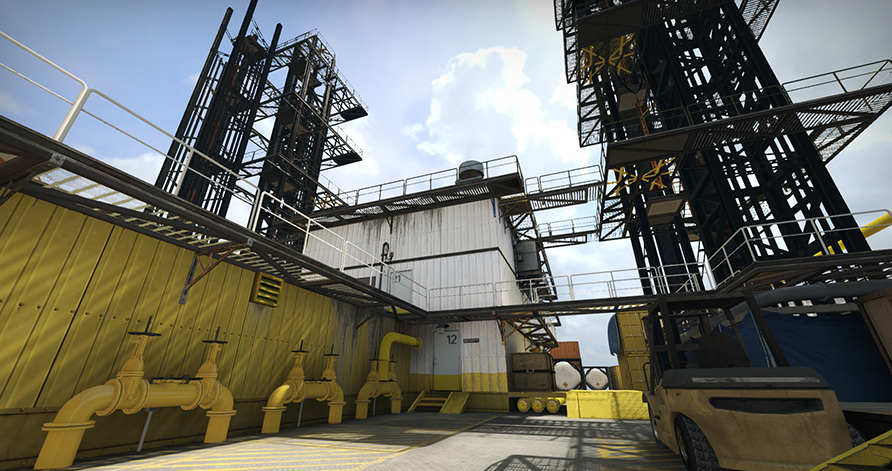

Bomb defusal maps in opperation Breakout
Black Gold
Black Gold (de_blackgold) is a community created Bomb Defusal map designed by az, Holiest Cow and The Horse Strangler and featured as part of Operation Breakout and Operation Hydra in Counter-Strike: Global Offensive.The map was removed from the game files in October 13, 2016 update, but returned during May 23, 2017 for Operation Hydra. The conflict takes place on a oil rig located in the ocean. Care must be taken when maneuvering around the edges of the map as players will instantly die if they jump outside the railings. This map features many climbable shipping containers and platforms for height advantage. The outside area is open while the bombsites favor close combat.
Castle
Castle (de_castle) is a community created bomb defusal map designed by Yanzl and featured as part of Operation Breakout in Counter-Strike: Global Offensive. On the October 13, 2016 update, the map was removed from the game files, making Castle inaccessible via console. The map takes place in an old castle built into the side of a mountain, and features large open cave areas. Many connectors present in this map give Terrorists many options during a single round, and help Counter-Terrorists retake the lost bombsites. The castle`s architecture makes the map`s layout different from other maps and adds vertical elements.
Mist
Mist (de_mist) is a community created Bomb defusal map designed by Invalid nick and featured as part of Operation Breakout in Counter-Strike: Global Offensive. The map takes place on a mountaintop radar station on a rainy night.
Overgrown
Overgrown (de_overgrown) is a community created bomb defusal map designed by Psy and featured as part of Operation Breakout in Counter-Strike: Global Offensive.